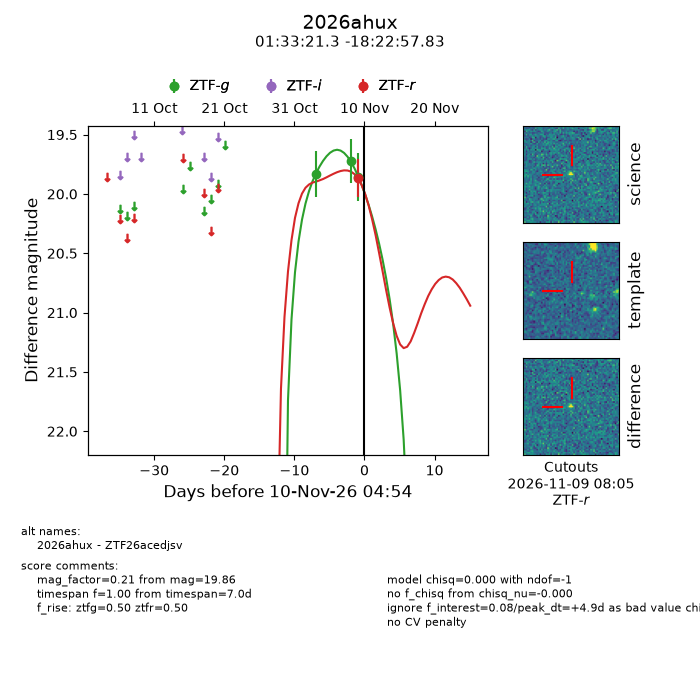
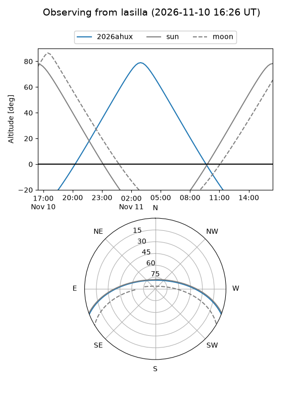
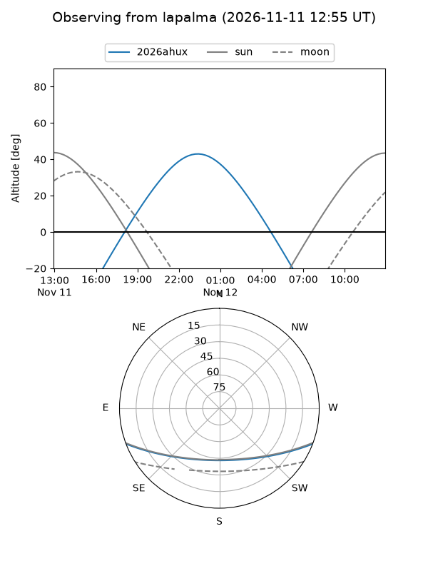
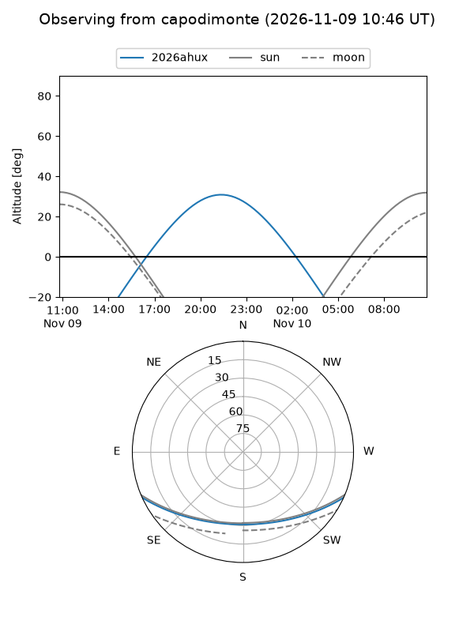
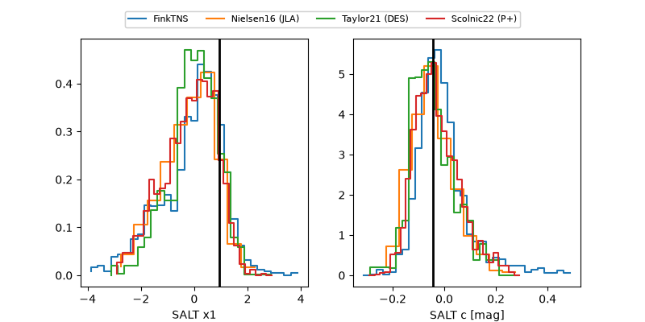

2026ahux
Target 2026ahux at 2026-11-10 04:57
Aliases and brokers:
FINK-ZTF: ztf.fink-portal.org/ZTF26acedjsv
Lasair-ZTF: lasair-ztf.lsst.ac.uk/objects/ZTF26acedjsv
ALeRCE-ZTF: alerce.online/object/ZTF26acedjsv
YSE-PZ: ziggy.ucolick.org/yse/transient_detail/2026ahux
TNS name: wis-tns.org/object/2026ahux
Direct TNS query: direct search
alt names
ZTF26acedjsv (ztf,fink_ztf)
2026ahux (tns,yse)
Coordinates:
equatorial (ra, dec) = 23.3386,-18.38273
equatorial (HMS+DMS) = 01:33:21.27,-18:22:57.83
galactic (l, b) = (172.9314,-76.97882)
Flags:
peak dt: +4.9
Photometry:
last ztfg=19.86, ztfr=19.87
3 ztfg, 1 ztfr detections
Lightcurve

Visibility



Additional plots
